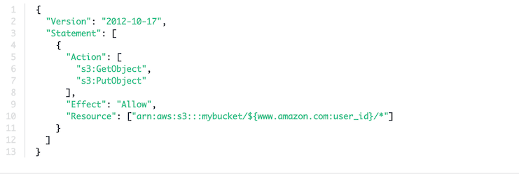

Quiz11 Security
Question 1
Server side encryption means that the data is sent encrypted to the server first
- true
- false
Question 2
In server side encryption, only the encryption happens on the server. Where does the decryption happen?
- The Server
- The Client
Question 3
We need to gain access to a Role in another AWS account. How is it done?
- We should ask for them to create a user for us
- We should ask for them to send us access keys
- We should use the STS service to gain temporary credentials
Question 4
You have a mobile application and would like to give your users access to their own personal space in Amazon S3. How do you achieve that?
- Generate IAM user credentials for each of your application's users
- Use Cognito Identity Federation
- Use SAML Identity Federation
- Use a Bucket Policy to make your bucket public
Question 5
You need an encryption service that supports asymmetric encryption schemes. Which service could you use?
- CloudHSM
- KMS
- Lambda
Question 6
We'd like to encrypt 100MB of data client side before uploading it to S3. We should use
- KMS
Encryptcall - Enveloppe Encryption
- SSE-S3
- SSE-KMS
Question 7
You would like to ensure data is encrypted client side before being sent to Kinesis. What should you use?
- The client side encryption option of the AWS SDK
- The client side encryption option of KPL library
- The client side encryption option of the KCL library
- You must create custom code
Question 8
Which technology allows you to access the AWS service from your private subnets without the need to have an outgoing internet connection?
- AWS Direct Connect
- VPC Endpoints
- Internet Gateways
- NAT Instances
Question 9
What do you need to attach to an IoT rule's engine action to ensure it's capable of sending data directly into Kinesis?
- An IAM user
- An IoT policy
- An IAM group
- An IAM role
Question 10
Which of the following statement is wrong?
- DynamoDB Streams cannot be encrypted
- DynamoDB security is done through IAM
- Users must be created within DynamoDB
- DynamoDB supports only table creation, not database creation
The entire security in DynamoDB is managed through IAM, we don't need to create users within DynamoDB (unlike RDS)
Question 11
Which of the following services is accessed through a VPC Endpoint of type Interface ?
- Kinesis
- DynamoDB
- S3
DynamoDB, S3: That's a gateway endpoint
Kinesis: VPC endpoint
Question 12
What security mechanism does not exist for RDS?
- KMS at rest encryption
- Cloud HSM at rest encryption
- SSL encryption
- Transparent Data Encryption
Question 13
You would like to deploy a Lambda function to privately access your RDS database. Under the default options, your Lambda function cannot reach your RDS database due to a network issue. How can you resolve it?
- Encrypt the database password with KMS
- Deploy your Lambda function in your VPC
- Increase the Lambda timeout
- Attach a VPC endpoint to RDS
Question 14
Which statement about EMR security is incorrect?
- You can SSH into your cluster nodes
- EMRFS supports S3 encryption
- Apache Ranger is packaged within EMR
- EMR supports LUKS encryption
- EMR supports Kerberos
- There are two security groups assigned between your different cluster nodes
If you choose to use Ranger, it must be installed externally from your EMR cluster. Recommended read: https://aws.amazon.com/blogs/big-data/best-practices-for-securing-amazon-emr/
Question 15
Which of the following login is not supported by Kibana?
- Using an IAM user
- Using Cognito
- Using an email / password combination
Question 16
Which at rest encryption is not supported by Redshift?
- KMS
- CloudHSM
- External HSM
- LUKS
LUKS is for EMR
Question 17
Your users are federated using the web identity provider amazon.com. What does the following policy do?

- Allow AWS IAM users to upload and download objects from a bucket that is named after their username
- Allow users federated through amazon.com to upload and download objects from a bucket that is named after their username
Question 18
Someone has deleted your Redshift cluster and you would like to find out who or what it was. How can you do it?
- Use Redshift access logs
- use 53 access Logs
- Use CloudTrail
- Use IAM